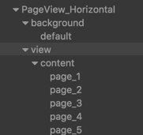

<!DOCTYPE html>
<html>
<head><meta name="generator" content="Hexo 3.9.0">
    <!-- so meta -->
    <meta charset="utf-8">
    <meta http-equiv="X-UA-Compatible" content="IE=edge">
    <meta name="HandheldFriendly" content="True">
    <meta name="viewport" content="width=device-width, initial-scale=1, maximum-scale=1">
    <meta name="description" content="从我对使用经验和看源码上谈谈PageView使用的几个要点 PageView基本使用  PageView_Horizental：PageView所在节点 View：通常这里放置Mask组件，如果不需要Mask，此节点也可省略 content：包含pages的节点  使用要点：  PageView的size决定了每个page将会移动到的位置，正常情况下根据方向的不同会移动到相对PageView居中的">
<meta name="keywords" content="Cocos2d,CocosCreator">
<meta property="og:type" content="article">
<meta property="og:title" content="PageView使用和分析">
<meta property="og:url" content="http://zzmingo.github.io/2017/08/25/cocos/page-view/index.html">
<meta property="og:site_name" content="Mingo&#39;s Blog">
<meta property="og:description" content="从我对使用经验和看源码上谈谈PageView使用的几个要点 PageView基本使用  PageView_Horizental：PageView所在节点 View：通常这里放置Mask组件，如果不需要Mask，此节点也可省略 content：包含pages的节点  使用要点：  PageView的size决定了每个page将会移动到的位置，正常情况下根据方向的不同会移动到相对PageView居中的">
<meta property="og:locale" content="default">
<meta property="og:image" content="http://zzmingo.github.io/2017/08/25/cocos/page-view/tree.png">
<meta property="og:updated_time" content="2020-02-02T09:14:02.479Z">
<meta name="twitter:card" content="summary">
<meta name="twitter:title" content="PageView使用和分析">
<meta name="twitter:description" content="从我对使用经验和看源码上谈谈PageView使用的几个要点 PageView基本使用  PageView_Horizental：PageView所在节点 View：通常这里放置Mask组件，如果不需要Mask，此节点也可省略 content：包含pages的节点  使用要点：  PageView的size决定了每个page将会移动到的位置，正常情况下根据方向的不同会移动到相对PageView居中的">
<meta name="twitter:image" content="http://zzmingo.github.io/2017/08/25/cocos/page-view/tree.png">
    
    
        
          
              <link rel="shortcut icon" href="/images/favicon.ico">
          
        
        
          
            <link rel="icon" type="image/png" href="/images/favicon-192x192.png" sizes="192x192">
          
        
        
          
            <link rel="apple-touch-icon" sizes="180x180" href="/images/apple-touch-icon.png">
          
        
    
    <!-- title -->
    <title>PageView使用和分析</title>
    <!-- styles -->
    <link rel="stylesheet" href="/css/style.css">
    <!-- rss -->
    
    
</head>

<body>
    
      <div id="header-post">
  <a id="menu-icon" href="#"><i class="fa fa-bars fa-lg"></i></a>
  <a id="menu-icon-tablet" href="#"><i class="fa fa-bars fa-lg"></i></a>
  <a id="top-icon-tablet" href="#" onclick="$('html, body').animate({ scrollTop: 0 }, 'fast');" style="display:none;"><i class="fa fa-chevron-up fa-lg"></i></a>
  <span id="menu">
    <span id="nav">
      <ul>
         
          <li><a href="/">Home</a></li>
         
          <li><a href="/about/">About</a></li>
         
          <li><a href="/archives/">Writing</a></li>
        
      </ul>
    </span>
    <br/>
    <span id="actions">
      <ul>
        
        <li><a class="icon" href="/2017/08/25/reading/game-design-happy-road/brain-pattern/"><i class="fa fa-chevron-left" aria-hidden="true" onmouseover='$("#i-prev").toggle();' onmouseout='$("#i-prev").toggle();'></i></a></li>
        
        
        <li><a class="icon" href="/2017/08/22/cocos/custom-button-hitarea/"><i class="fa fa-chevron-right" aria-hidden="true" onmouseover='$("#i-next").toggle();' onmouseout='$("#i-next").toggle();'></i></a></li>
        
        <li><a class="icon" href="#" onclick="$('html, body').animate({ scrollTop: 0 }, 'fast');"><i class="fa fa-chevron-up" aria-hidden="true" onmouseover='$("#i-top").toggle();' onmouseout='$("#i-top").toggle();'></i></a></li>
        <li><a class="icon" href="#"><i class="fa fa-share-alt" aria-hidden="true" onmouseover='$("#i-share").toggle();' onmouseout='$("#i-share").toggle();' onclick='$("#share").toggle();return false;'></i></a></li>
      </ul>
      <span id="i-prev" class="info" style="display:none;">Previous post</span>
      <span id="i-next" class="info" style="display:none;">Next post</span>
      <span id="i-top" class="info" style="display:none;">Back to top</span>
      <span id="i-share" class="info" style="display:none;">Share post</span>
    </span>
    <br/>
    <div id="share" style="display: none">
      <ul>
  <li><a class="icon" href="http://www.facebook.com/sharer.php?u=http://zzmingo.github.io/2017/08/25/cocos/page-view/"><i class="fa fa-facebook " aria-hidden="true"></i></a></li>
  <li><a class="icon" href="https://twitter.com/share?url=http://zzmingo.github.io/2017/08/25/cocos/page-view/&text=PageView使用和分析"><i class="fa fa-twitter " aria-hidden="true"></i></a></li>
  <li><a class="icon" href="http://www.linkedin.com/shareArticle?url=http://zzmingo.github.io/2017/08/25/cocos/page-view/&title=PageView使用和分析"><i class="fa fa-linkedin " aria-hidden="true"></i></a></li>
  <li><a class="icon" href="https://pinterest.com/pin/create/bookmarklet/?url=http://zzmingo.github.io/2017/08/25/cocos/page-view/&is_video=false&description=PageView使用和分析"><i class="fa fa-pinterest " aria-hidden="true"></i></a></li>
  <li><a class="icon" href="mailto:?subject=PageView使用和分析&body=Check out this article: http://zzmingo.github.io/2017/08/25/cocos/page-view/"><i class="fa fa-envelope " aria-hidden="true"></i></a></li>
  <li><a class="icon" href="https://getpocket.com/save?url=http://zzmingo.github.io/2017/08/25/cocos/page-view/&title=PageView使用和分析"><i class="fa fa-get-pocket " aria-hidden="true"></i></a></li>
  <li><a class="icon" href="http://reddit.com/submit?url=http://zzmingo.github.io/2017/08/25/cocos/page-view/&title=PageView使用和分析"><i class="fa fa-reddit " aria-hidden="true"></i></a></li>
  <li><a class="icon" href="http://www.stumbleupon.com/submit?url=http://zzmingo.github.io/2017/08/25/cocos/page-view/&title=PageView使用和分析"><i class="fa fa-stumbleupon " aria-hidden="true"></i></a></li>
  <li><a class="icon" href="http://digg.com/submit?url=http://zzmingo.github.io/2017/08/25/cocos/page-view/&title=PageView使用和分析"><i class="fa fa-digg " aria-hidden="true"></i></a></li>
  <li><a class="icon" href="http://www.tumblr.com/share/link?url=http://zzmingo.github.io/2017/08/25/cocos/page-view/&name=PageView使用和分析&description="><i class="fa fa-tumblr " aria-hidden="true"></i></a></li>
</ul>

    </div>
    <div id="toc">
      <ol class="toc"><li class="toc-item toc-level-2"><a class="toc-link" href="#PageView基本使用"><span class="toc-number">1.</span> <span class="toc-text">PageView基本使用</span></a></li><li class="toc-item toc-level-2"><a class="toc-link" href="#SizeMode-Free-Unified"><span class="toc-number">2.</span> <span class="toc-text">SizeMode Free/Unified</span></a></li><li class="toc-item toc-level-2"><a class="toc-link" href="#快速滑动和滚动"><span class="toc-number">3.</span> <span class="toc-text">快速滑动和滚动</span></a></li><li class="toc-item toc-level-2"><a class="toc-link" href="#附"><span class="toc-number">4.</span> <span class="toc-text">附</span></a></li></ol>
    </div>
  </span>
</div>

    
    <div class="content index width mx-auto px2 my4">
        
        <article class="post" itemscope itemtype="http://schema.org/BlogPosting">
  <header>
    
    <h1 class="posttitle" itemprop="name headline">
        PageView使用和分析
    </h1>


    <div class="meta">
      <span class="author" itemprop="author" itemscope itemtype="http://schema.org/Person">
        <span itemprop="name">Mingo's Blog</span>
      </span>
      
    <div class="postdate">
        <time datetime="2017-08-24T16:00:00.000Z" itemprop="datePublished">2017-08-25</time>
    </div>


      
    <div class="article-tag">
        <i class="fa fa-tag"></i>
        <a class="tag-link" href="/tags/Cocos2d/">Cocos2d</a>, <a class="tag-link" href="/tags/CocosCreator/">CocosCreator</a>
    </div>


    </div>
  </header>
  

  <div class="content" itemprop="articleBody">
    <p>从我对使用经验和看源码上谈谈PageView使用的几个要点</p>
<h2 id="PageView基本使用"><a href="#PageView基本使用" class="headerlink" title="PageView基本使用"></a>PageView基本使用</h2><p></p>
<ul>
<li>PageView_Horizental：PageView所在节点</li>
<li>View：通常这里放置Mask组件，如果不需要Mask，此节点也可省略</li>
<li>content：包含pages的节点</li>
</ul>
<p>使用要点：</p>
<ul>
<li>PageView的size决定了每个page将会移动到的位置，正常情况下根据方向的不同会移动到相对PageView居中的位置</li>
<li>添加Page时一定要使用PageView的addPage方法，而不是拿到content节点addChild</li>
<li>移动view节点是没有意义的，最好是让它在PageView居中的位置，这样不会出现意外</li>
<li>由于PageView继承自ScrollView，一定要注意在初始状态时content的位置处在不会回弹的位置，否则位置将不正确</li>
<li>PageView的SizeMode初始状态设置好后最好不要改变，除非你知道自己在做什么</li>
<li>自己手动设置content的padding没有意义，因为PageView自己进行了设置</li>
</ul>
<p>接下来进行分析</p>
<h2 id="SizeMode-Free-Unified"><a href="#SizeMode-Free-Unified" class="headerlink" title="SizeMode Free/Unified"></a>SizeMode Free/Unified</h2><ul>
<li>Free：每一个Page可以是不一样的尺寸</li>
<li>Unified：所有Page统一尺寸</li>
</ul>
<p>不管如何，只要设置正确，PageView根据设定，滑动时总会让当前那个Page移动到相对PageView居中的位置<br><br>深入分析：</p>
<p>PageView组件<code>初始化</code>和<code>SizeMode</code>被改变时，会调用<code>_syncSizeMode</code>，从而对布局作了一些影响：</p>
<figure class="highlight js"><table><tr><td class="gutter"><pre><span class="line">1</span><br><span class="line">2</span><br><span class="line">3</span><br><span class="line">4</span><br><span class="line">5</span><br><span class="line">6</span><br><span class="line">7</span><br><span class="line">8</span><br><span class="line">9</span><br><span class="line">10</span><br><span class="line">11</span><br><span class="line">12</span><br><span class="line">13</span><br><span class="line">14</span><br><span class="line">15</span><br><span class="line">16</span><br><span class="line">17</span><br><span class="line">18</span><br><span class="line">19</span><br><span class="line">20</span><br><span class="line">21</span><br><span class="line">22</span><br><span class="line">23</span><br><span class="line">24</span><br><span class="line">25</span><br><span class="line">26</span><br><span class="line">27</span><br><span class="line">28</span><br><span class="line">29</span><br><span class="line">30</span><br><span class="line">31</span><br><span class="line">32</span><br><span class="line">33</span><br><span class="line">34</span><br><span class="line">35</span><br><span class="line">36</span><br><span class="line">37</span><br><span class="line">38</span><br><span class="line">39</span><br><span class="line">40</span><br><span class="line">41</span><br><span class="line">42</span><br><span class="line">43</span><br><span class="line">44</span><br><span class="line">45</span><br><span class="line">46</span><br><span class="line">47</span><br><span class="line">48</span><br><span class="line">49</span><br><span class="line">50</span><br><span class="line">51</span><br><span class="line">52</span><br><span class="line">53</span><br><span class="line">54</span><br><span class="line">55</span><br><span class="line">56</span><br><span class="line">57</span><br></pre></td><td class="code"><pre><span class="line">_syncSizeMode: <span class="function"><span class="keyword">function</span> (<span class="params"></span>) </span>&#123;</span><br><span class="line">    <span class="keyword">if</span> (!<span class="keyword">this</span>.content) &#123; <span class="keyword">return</span>; &#125;</span><br><span class="line">    <span class="keyword">var</span> layout = <span class="keyword">this</span>.content.getComponent(cc.Layout);</span><br><span class="line">    <span class="keyword">if</span> (layout) &#123;</span><br><span class="line">        <span class="keyword">if</span> (<span class="keyword">this</span>._pages.length === <span class="number">0</span>) &#123;</span><br><span class="line">            <span class="comment">// 将 paddingLeft/paddingRight/paddingTop/paddingBottom 设置为0</span></span><br><span class="line">            layout.padding = <span class="number">0</span>;</span><br><span class="line">        &#125;</span><br><span class="line">        <span class="keyword">else</span> &#123;</span><br><span class="line">            <span class="keyword">var</span> lastPage = <span class="keyword">this</span>._pages[<span class="keyword">this</span>._pages.length - <span class="number">1</span>];</span><br><span class="line">            <span class="keyword">if</span> (<span class="keyword">this</span>.sizeMode === SizeMode.Free) &#123;</span><br><span class="line">                <span class="keyword">if</span> (<span class="keyword">this</span>.direction === Direction.Horizontal) &#123;</span><br><span class="line">                    layout.paddingLeft = (<span class="keyword">this</span>.node.width - <span class="keyword">this</span>._pages[<span class="number">0</span>].width) / <span class="number">2</span>;</span><br><span class="line">                    layout.paddingRight = (<span class="keyword">this</span>.node.width - lastPage.width) / <span class="number">2</span>;</span><br><span class="line">                &#125;</span><br><span class="line">                <span class="keyword">else</span> <span class="keyword">if</span> (<span class="keyword">this</span>.direction === Direction.Vertical) &#123;</span><br><span class="line">                    layout.paddingTop = (<span class="keyword">this</span>.node.height - <span class="keyword">this</span>._pages[<span class="number">0</span>].height) / <span class="number">2</span>;</span><br><span class="line">                    layout.paddingBottom = (<span class="keyword">this</span>.node.height - lastPage.height) / <span class="number">2</span>;</span><br><span class="line">                &#125;</span><br><span class="line">            &#125;</span><br><span class="line">        &#125;</span><br><span class="line">        layout._updateLayout();</span><br><span class="line">    &#125;</span><br><span class="line">&#125;,</span><br><span class="line"></span><br><span class="line"></span><br><span class="line">...</span><br><span class="line"></span><br><span class="line"></span><br><span class="line"><span class="comment">// 刷新页面视图</span></span><br><span class="line">_updatePageView: <span class="function"><span class="keyword">function</span> (<span class="params"></span>) </span>&#123;</span><br><span class="line">    <span class="keyword">var</span> pageCount = <span class="keyword">this</span>._pages.length;</span><br><span class="line"></span><br><span class="line">    <span class="comment">// 当页面数组变化时修改 content 大小</span></span><br><span class="line">    <span class="keyword">var</span> layout = <span class="keyword">this</span>.content.getComponent(cc.Layout);</span><br><span class="line">    <span class="keyword">if</span>(layout &amp;&amp; layout.enabled) &#123;</span><br><span class="line">        layout._updateLayout();</span><br><span class="line">    &#125;</span><br><span class="line">    <span class="keyword">if</span> (<span class="keyword">this</span>._curPageIdx &gt;= pageCount) &#123;</span><br><span class="line">        <span class="keyword">this</span>._curPageIdx = pageCount === <span class="number">0</span> ? <span class="number">0</span> : pageCount - <span class="number">1</span>;</span><br><span class="line">        <span class="keyword">this</span>._lastPageIdx = <span class="keyword">this</span>._curPageIdx;</span><br><span class="line">    &#125;</span><br><span class="line">    <span class="comment">// 进行排序</span></span><br><span class="line">    <span class="keyword">for</span> (<span class="keyword">var</span> i = <span class="number">0</span>; i &lt; pageCount; ++i) &#123;</span><br><span class="line">        <span class="keyword">this</span>._pages[i].setSiblingIndex(i);</span><br><span class="line">        <span class="keyword">if</span> (<span class="keyword">this</span>.direction === Direction.Horizontal) &#123;</span><br><span class="line">            <span class="keyword">this</span>._scrollCenterOffsetX[i] = <span class="built_in">Math</span>.abs(<span class="keyword">this</span>.content.x + <span class="keyword">this</span>._pages[i].x);</span><br><span class="line">        &#125;</span><br><span class="line">        <span class="keyword">else</span> &#123;</span><br><span class="line">            <span class="keyword">this</span>._scrollCenterOffsetY[i] = <span class="built_in">Math</span>.abs(<span class="keyword">this</span>.content.y + <span class="keyword">this</span>._pages[i].y);</span><br><span class="line">        &#125;</span><br><span class="line">    &#125;</span><br><span class="line">    <span class="comment">// 刷新 indicator 信息与状态</span></span><br><span class="line">    <span class="keyword">if</span> (<span class="keyword">this</span>.indicator) &#123;</span><br><span class="line">        <span class="keyword">this</span>.indicator._refresh();</span><br><span class="line">    &#125;</span><br><span class="line">&#125;,</span><br></pre></td></tr></table></figure>
<p>当SizeMode为Free时，PageView会把content的padding设置正确，同时会记录每一个page中心点位置的相对位移，以致于在滚动时能正确滚到相应位置</p>
<blockquote>
<p>注意，从代码中可以看出：content的Layout组件中的padding不再受<br>开发者自己设置影响了<strong>（这是其中一个坑点）除非</strong>SizeMode<strong>设置<br>为</strong>Unified**，并且在<code>onLoad</code>时content已经存在有子节点，这里<br>的代码设计非常不受控因此，最佳实践是：从不去设置content的Layout<br>组件中的padding，并且SizeMode设置后不再更改</p>
</blockquote>
<h2 id="快速滑动和滚动"><a href="#快速滑动和滚动" class="headerlink" title="快速滑动和滚动"></a>快速滑动和滚动</h2><ul>
<li>快速滑动：英文通常为swipe，通过惯性翻页</li>
<li>滚动：慢速的滚动，当滚动放手时，惯性不够大时不会产生快速滑动，会由ScrollThreshold决定将要去到哪一页</li>
</ul>
<h2 id="附"><a href="#附" class="headerlink" title="附"></a>附</h2><p><a href="https://github.com/cocos-creator/engine/blob/1552c11156cf6505cff5a70306aac8545c57250b/cocos2d/core/components/CCPageView.js" target="_blank" rel="noopener">PageView.js源码地址</a></p>

  </div>
</article>


    </div>
    
      <div id="footer-post-container">
  <div id="footer-post">

    <div id="nav-footer" style="display: none">
      <ul>
         
          <li><a href="/">Home</a></li>
         
          <li><a href="/about/">About</a></li>
         
          <li><a href="/archives/">Writing</a></li>
        
      </ul>
    </div>

    <div id="toc-footer" style="display: none">
      <ol class="toc"><li class="toc-item toc-level-2"><a class="toc-link" href="#PageView基本使用"><span class="toc-number">1.</span> <span class="toc-text">PageView基本使用</span></a></li><li class="toc-item toc-level-2"><a class="toc-link" href="#SizeMode-Free-Unified"><span class="toc-number">2.</span> <span class="toc-text">SizeMode Free/Unified</span></a></li><li class="toc-item toc-level-2"><a class="toc-link" href="#快速滑动和滚动"><span class="toc-number">3.</span> <span class="toc-text">快速滑动和滚动</span></a></li><li class="toc-item toc-level-2"><a class="toc-link" href="#附"><span class="toc-number">4.</span> <span class="toc-text">附</span></a></li></ol>
    </div>

    <div id="share-footer" style="display: none">
      <ul>
  <li><a class="icon" href="http://www.facebook.com/sharer.php?u=http://zzmingo.github.io/2017/08/25/cocos/page-view/"><i class="fa fa-facebook fa-lg" aria-hidden="true"></i></a></li>
  <li><a class="icon" href="https://twitter.com/share?url=http://zzmingo.github.io/2017/08/25/cocos/page-view/&text=PageView使用和分析"><i class="fa fa-twitter fa-lg" aria-hidden="true"></i></a></li>
  <li><a class="icon" href="http://www.linkedin.com/shareArticle?url=http://zzmingo.github.io/2017/08/25/cocos/page-view/&title=PageView使用和分析"><i class="fa fa-linkedin fa-lg" aria-hidden="true"></i></a></li>
  <li><a class="icon" href="https://pinterest.com/pin/create/bookmarklet/?url=http://zzmingo.github.io/2017/08/25/cocos/page-view/&is_video=false&description=PageView使用和分析"><i class="fa fa-pinterest fa-lg" aria-hidden="true"></i></a></li>
  <li><a class="icon" href="mailto:?subject=PageView使用和分析&body=Check out this article: http://zzmingo.github.io/2017/08/25/cocos/page-view/"><i class="fa fa-envelope fa-lg" aria-hidden="true"></i></a></li>
  <li><a class="icon" href="https://getpocket.com/save?url=http://zzmingo.github.io/2017/08/25/cocos/page-view/&title=PageView使用和分析"><i class="fa fa-get-pocket fa-lg" aria-hidden="true"></i></a></li>
  <li><a class="icon" href="http://reddit.com/submit?url=http://zzmingo.github.io/2017/08/25/cocos/page-view/&title=PageView使用和分析"><i class="fa fa-reddit fa-lg" aria-hidden="true"></i></a></li>
  <li><a class="icon" href="http://www.stumbleupon.com/submit?url=http://zzmingo.github.io/2017/08/25/cocos/page-view/&title=PageView使用和分析"><i class="fa fa-stumbleupon fa-lg" aria-hidden="true"></i></a></li>
  <li><a class="icon" href="http://digg.com/submit?url=http://zzmingo.github.io/2017/08/25/cocos/page-view/&title=PageView使用和分析"><i class="fa fa-digg fa-lg" aria-hidden="true"></i></a></li>
  <li><a class="icon" href="http://www.tumblr.com/share/link?url=http://zzmingo.github.io/2017/08/25/cocos/page-view/&name=PageView使用和分析&description="><i class="fa fa-tumblr fa-lg" aria-hidden="true"></i></a></li>
</ul>

    </div>

    <div id="actions-footer">
      <ul>
        <li id="toc"><a class="icon" href="#" onclick='$("#toc-footer").toggle();return false;'><i class="fa fa-list fa-lg" aria-hidden="true"></i> TOC</a></li>
        <li id="share"><a class="icon" href="#" onclick='$("#share-footer").toggle();return false;'><i class="fa fa-share-alt fa-lg" aria-hidden="true"></i> Share</a></li>
        <li id="top" style="display:none"><a class="icon" href="#" onclick="$('html, body').animate({ scrollTop: 0 }, 'fast');"><i class="fa fa-chevron-up fa-lg" aria-hidden="true"></i> Top</a></li>
        <li id="menu"><a class="icon" href="#" onclick='$("#nav-footer").toggle();return false;'><i class="fa fa-bars fa-lg" aria-hidden="true"></i> Menu</a></li>
      </ul>
    </div>

  </div>
</div>

    
    <footer id="footer">
  <div class="footer-left">
    Copyright &copy; 2020 Mingo
  </div>
  <div class="footer-right">
    <nav>
      <ul>
         
          <li><a href="/">Home</a></li>
         
          <li><a href="/about/">About</a></li>
         
          <li><a href="/archives/">Writing</a></li>
        
      </ul>
    </nav>
  </div>
</footer>

</body>
</html>
<!-- styles -->
<link rel="stylesheet" href="/lib/font-awesome/css/font-awesome.min.css">
<link rel="stylesheet" href="/lib/meslo-LG/styles.css">
<link rel="stylesheet" href="/lib/justified-gallery/justifiedGallery.min.css">


<!-- jquery -->
<script src="/lib/jquery/jquery.min.js"></script>
<script src="/lib/justified-gallery/jquery.justifiedGallery.min.js"></script>
<script src="/js/main.js"></script>
<!-- Google Analytics -->

    <script type="text/javascript">
        (function(i,s,o,g,r,a,m) {i['GoogleAnalyticsObject']=r;i[r]=i[r]||function() {
        (i[r].q=i[r].q||[]).push(arguments)},i[r].l=1*new Date();a=s.createElement(o),
        m=s.getElementsByTagName(o)[0];a.async=1;a.src=g;m.parentNode.insertBefore(a,m)
        })(window,document,'script','//www.google-analytics.com/analytics.js','ga');
        ga('create', 'UA-104420582-1', 'auto');
        ga('send', 'pageview');
    </script>

<!-- Disqus Comments -->


